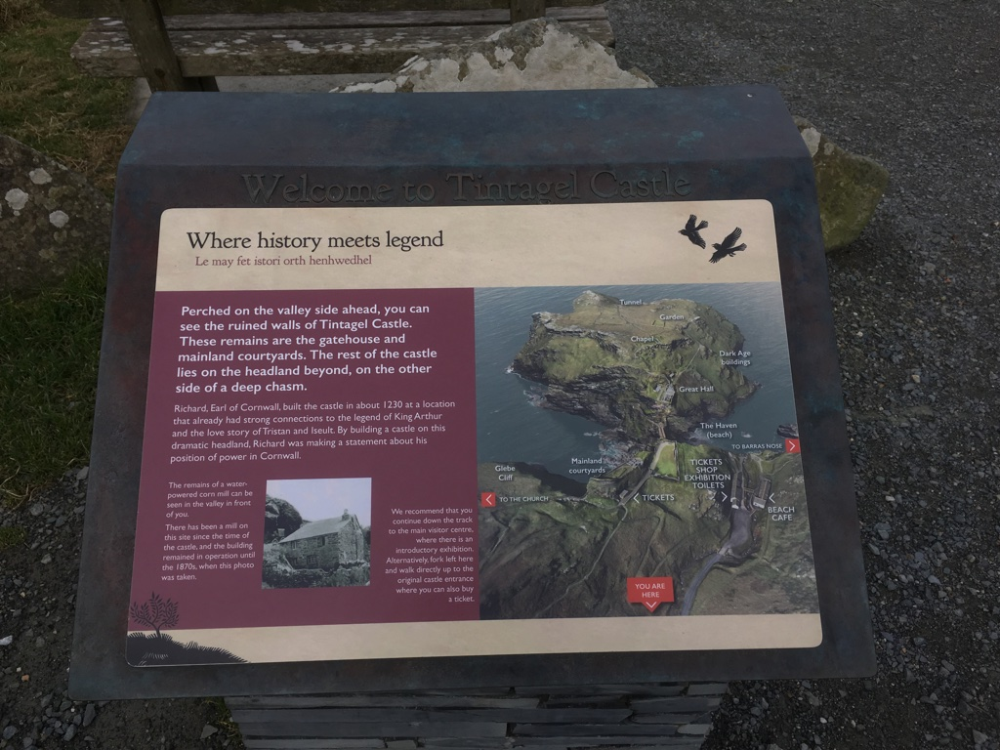
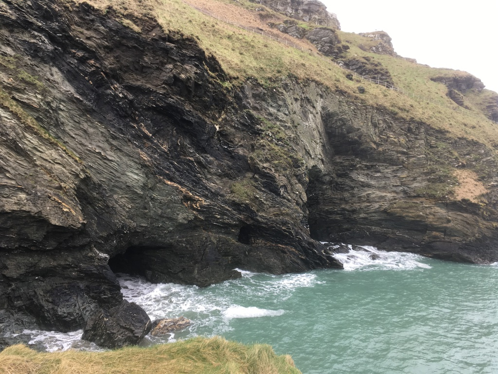
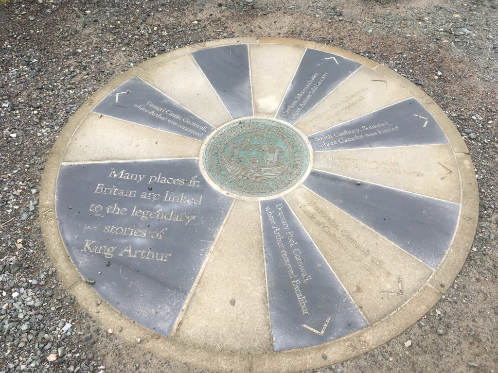
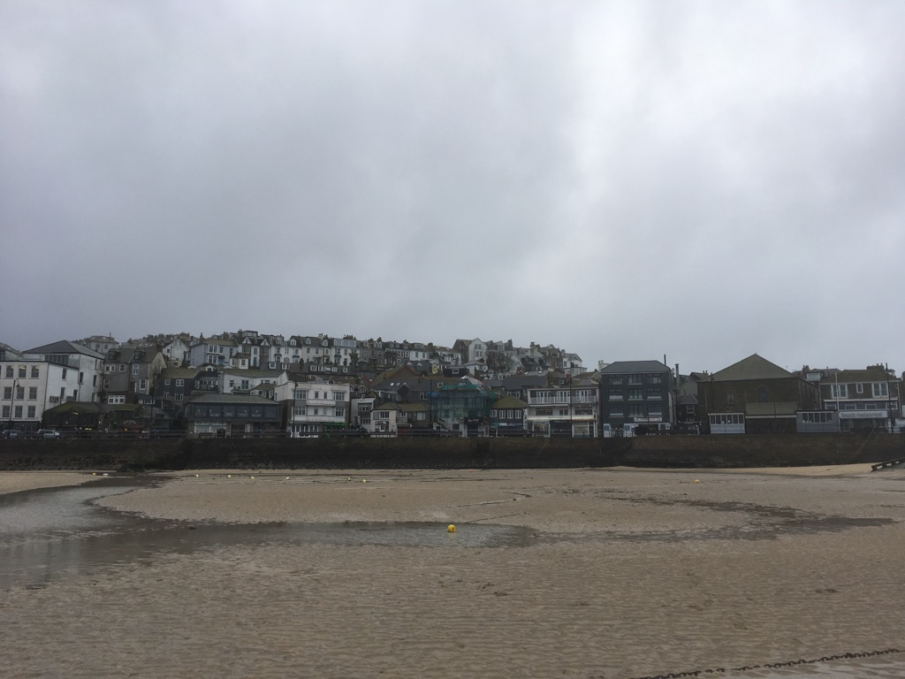
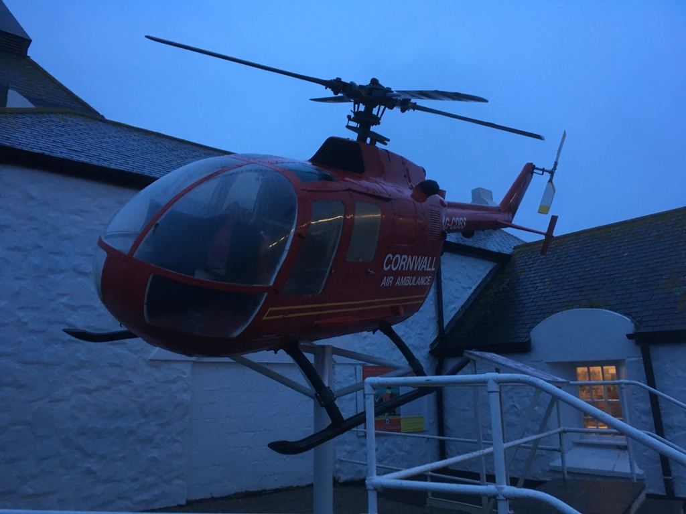
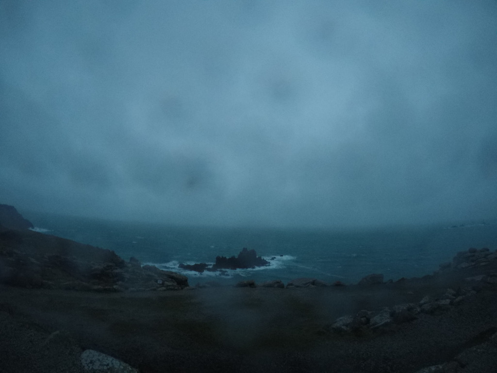

It’s nearly the end of our trip in the UK. In Day 7 & 8, we chose the Cornwall - a county on England’s rugged southwestern tip as our last stop. It’s actually a peninsula encompassing wild moorland and hundreds of sandy beaches, culminating at the promontory Land’s End. Due to the short of time, we only chose several remarkable spots to stop and visit. Long drive, long journey, something interesting happened, some were actually scary. Let’s get started!
Tintagel - History meets Legend
Our first stop is Tintagel. It’s supposed to be the birthplace of King Arthur. Personally I’m very fond of the global history and legends, especially some stories of King Arthur and his Knights of the Round Table. Unfortunately, the Tintagel castle was closed when we visited there. So we just walked around but there were still some nice photos:

Probably my favourite photo during the trip!



St.Ives
After Tintagel, we approached to St.Ives. St. Ives is a very small village. However, the most annoying story was happened here - I literally reversed the car from the bottom of narrow road back to the top. The consequence was that I nearly burned my clutch!!
As I said, St. Ives is a tiny village so most of roads are extremely narrow. In addition, it’s built near the sea so the whole village is built along the hill. It causes lots of roads in the village was with angles about 30 degree to 45 degree. Because we were not familiar with directions, we had to follow the navigation. Just in a one-way narrow road, we turned in but blocked by a large construction truck. We had to reverse back with nearly 40 degree angles from bottom to top!! Luckily, I got two full licences in both China and Ireland so I was able to handle it. Even though, I still nearly burned my clutch because the road was so sharp and narrow, I had to hold clutch and the speed in order to keep the car in the middle of the road, not scratching the wall on both sides. In the end, I successfully reversed the car but got drenched thoroughly. We only took few photos in St.Ives as the weather was very bad.

Land’s End
Due to the extra hours wasted in St. Ives, when we arrived in Land’s End, it nearly became dark. It was very strong wind and rain. The tourist centre was closed so we could only take some photos quickly.


In the End
As we planned, after Land’s End, we drove to Plymouth to stay overnight. In my next blog, I will talk about our last day trip in Plymouth and Cornwall. Hope you guys like my travelling blogs.
See you next time! Have a good night.